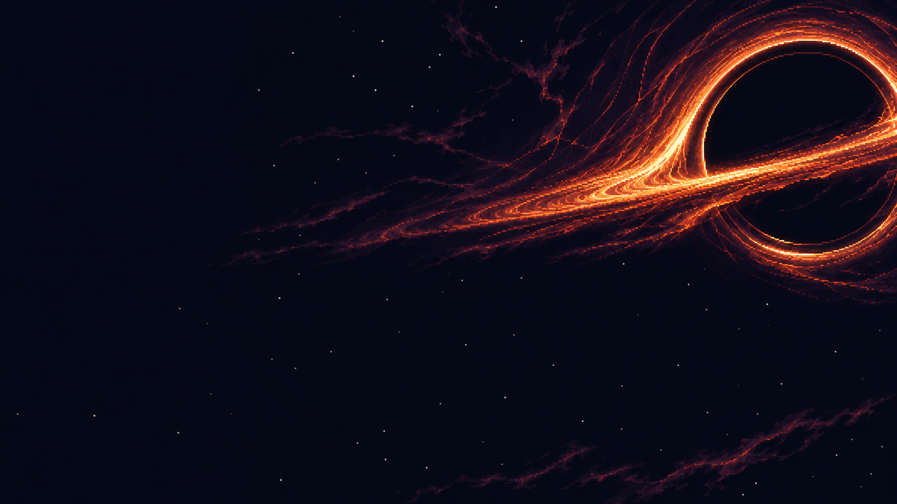
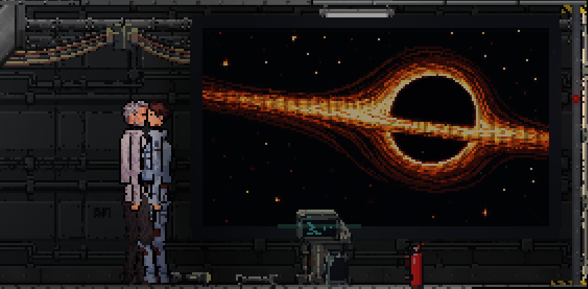
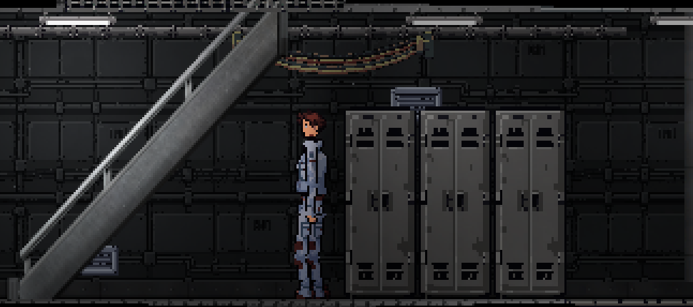
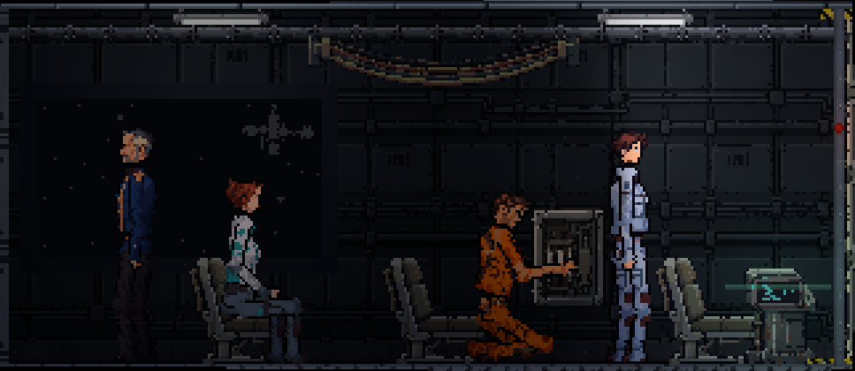

Ваша первая смена
вдали от Земли
Вы прибываете на станцию в роли стажёра. Знакомьтесь с экипажем, осматривайте отсеки и беритесь за первые задания.

Первая глава
начинается в шаттле
Инженер занят щитком, медик дремлет, капитан стоит у иллюминатора. Разговоры в пути станут вашим знакомством с командой.
Познакомиться с экипажемСтанция отвечает
на ваши действия
Исследуйте окружение, пользуйтесь предметами и выбирайте реплики в разговорах.

Загляните в отсеки
Перемещайтесь между палубами, читайте записи и находите нужные предметы.

Слушайте экипаж
В диалогах можно задавать вопросы, отвечать или промолчать. Ваши решения учитываются историей.
Игра для Windows
Скачайте архив, распакуйте его целиком и запустите Event Horizon.exe. Устанавливать Unity не нужно.
Windows x64. Архив 52 МБ. Сборка от 4 ноября 2026 года.
Это текущая сборка проекта. Полная история и новые главы ещё в разработке.
Скачать архив игры